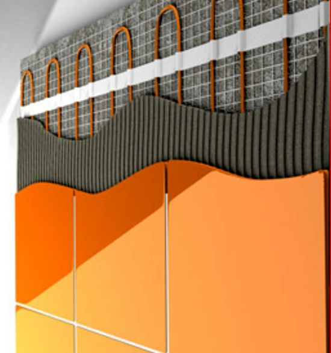
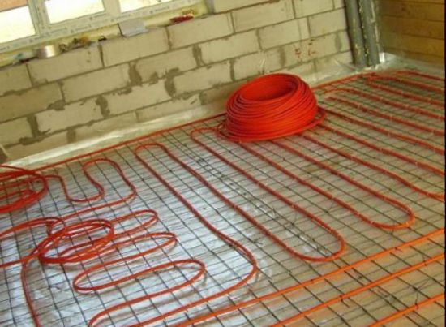
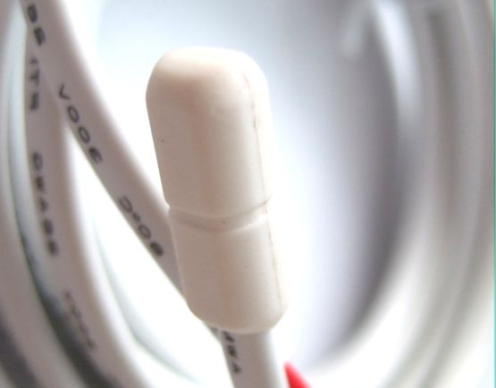
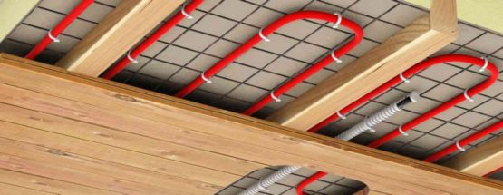
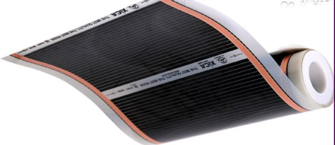
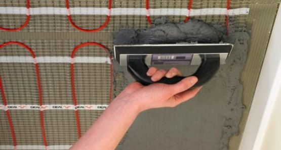
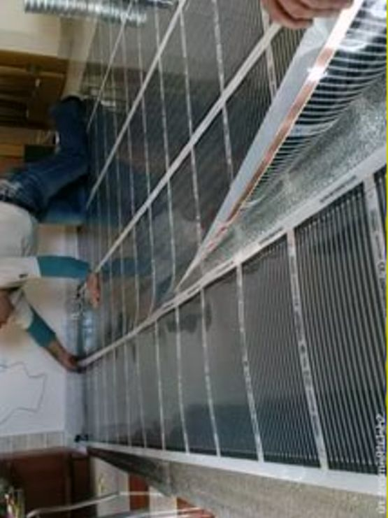
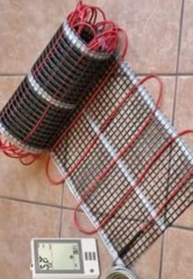

Качественный электромонтаж, Стаж 12 лет. Частный электрик, недорого.
Тел. 8 904 642 08 57. Николай.

Система теплый пол.
Система теплых полов известна и используется во всем мире. Теплые полы помогут вам забыть про неприятные ощущения при ходьбе босиком. Подобные системы применялись еще до нашей эры, когда по идущие по полым отверстиям внутри стен потоки горячего воздуха создавали равномерную комфортную температуру внутри всего помещения. Теперь в системе теплых полов применяется электричество.
Мастер по установке тёплых полов.
Теплый пол легок в управлении, имеет значительный срок эксплуатации и совершенно не расходует полезных квадратных метров. Благодаря ему в квартире устанавливается идеально комфортная температура – в 22–24 С градуса. Технология монтажа при установке теплого пола включает в себя монтаж перекрытия и теплоизоляции, установку нагревательных кабелей. Также в систему устанавливается датчик температуры.
Сколько стоит установить систему тёплого пола.
Площадь пола в кв. м. |
Цена за установку 1 кв. м. в руб. |
До 12 кв. м. |
От 900 руб. |
18 |
800 |
25 |
750 |
32 |
700 |
40 |
650 |
До 50 кв. м. |
600 |
От 50 кв. м. |
От 500 руб. |
Перекрытие считается главным элементом в системе теплого пола.

Для монтажа нагревательных секций необходима сухая и чистая поверхность. На ней не допускаются неровности и трещины. При необходимости нужно использовать выравнивающие смеси.
Теплоизоляцию устанавливают на ровный и чистый черновой пол.
Чтобы повысить комфортность системы отопления, допускается применение теплоизоляции, в основе которой находятся вспененные материалы.

Нагревательные кабели для теплого пола, подразделяются на одножильные и двужильные. И те и другие допускается применять при обогреве помещений, как для производственных нужд, так и для проживания людей.
Датчик температуры устанавливается между двумя кабелями.
Датчик устанавливается внутри специальной гофрированной трубки, окружность которой 14-20 мм. Он устанавливается на конце трубки, в то время как соединительный провод проходит по всей длине трубки и выпускается на противоположном конце.

На поверхность теплого пола допускается укладка цементно-песочной стяжки, имеющей плотность около 3–5 см. Для укрепления стяжки используются полимерные сетки.
Что можно класть на тёплый пол.
На теплый пол допускается устанавливать самые различные виды напольных покрытий — плитку, паркет, ламинат. Во время работы теплых полов не допускается накрывать часть пола с работающей системой теплых полов никакими теплоизоляторами – например, покрывалами или одеялами. Если на поверхность теплого пола планируется укладка паркета, необходимо будет правильно выбрать породу дерева.

А лучше всего использовать заменитель паркета – ламинат.
Термостат регулирует подачу электричества, включая его только при необходимости. Термостат позволяет устанавливать программу для поддержания нужной температуры на необходимый срок.
Для нагрева теплого пола также может использоваться специальная нагревающаяся пленка.

На тонком, изготовленном из графита материале такой пленки расположены электроды, и их сопротивление обеспечивает нагревание. Подача тепла происходит равномерно, а свойства пленки способствуют его сохранению. В воздухе отсутствует запах гари, температура регулируется и может достигать + 55 С.
Такой теплый пол составляет достойную конкуренцию другим похожим системам отопления. Кабельный обогрев используется для поддержания нужной температуры в водосточных трубах, водостоках, с успехом применяется для обогрева кровли.
Чаще всего система теплого пола устанавливается в ванных комнатах.
Плитка, используемая в ванных, оптимально для этого подходит. На плиточном полу ванной комнаты создается комфортная температура пола – 29 С.
Можно использовать систему теплых полов, как в качестве основной системы отопления, так и в качестве дополнения к ней.

Такое совмещение традиционной централизованной системы отопления с системой теплых полов используется либо когда первая не справляется со своей задачей, либо когда отопление имеет сезонный характер.
Преимущество установки талых полов.
Как известно, в нашей стране используется централизованная система отопления, в работе которой зачастую наблюдаются сбои, часто даже ранней осенью, когда отопительный сезон еще не начался, температура воздуха становится низкой, и в квартирах бывает элементарно холодно.

Известно, что при работе любых радиаторов сушится воздух, происходит сжигание кислорода, что немедленно сказывается на нашем самочувствии. Система теплых полов лишена данных недостатков, наоборот, у нее есть важные преимущества: освобождаются полезные квадратные метры, при расстановке мебели возникает меньше проблем.
Принимая во внимание фактор низкой температуры для большей части календарного года, можно сделать вывод о том, что в нашей стране целесообразнее будет применить тёплые полы в качестве дополнения к традиционной системе отопления. В то же время в переходное время года, когда температура уже понизилась, а отопление не работает, система теплых домов сохранит в помещениях комфортную температуру.


Сделать электрику в квартире.
Расценки на электропроводку квартир.
Провести электропроводку в новостройке.
Электромонтаж в частном доме.
Электрика в загородном доме.
Сколько стоит замена электропроводки в двухкомнатной квартире?.
Сколько стоит проводка в 3 ком квартире?
Сколько стоит проложить проводку в четырех комнатной квартире?
Сколько стоит сделать внутреннюю проводку?
Стоимость штробление стен.
Электромонтаж двухкомнатной квартиры.
Замена электропроводки в панельном доме.
Электромонтаж проводов в бане.